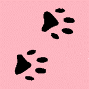
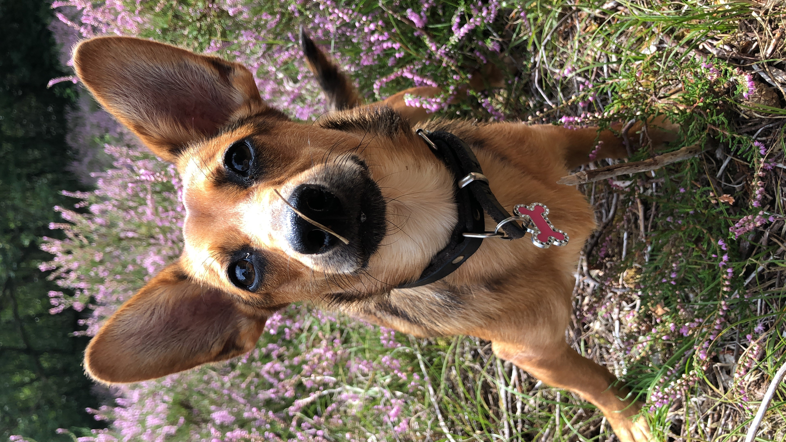
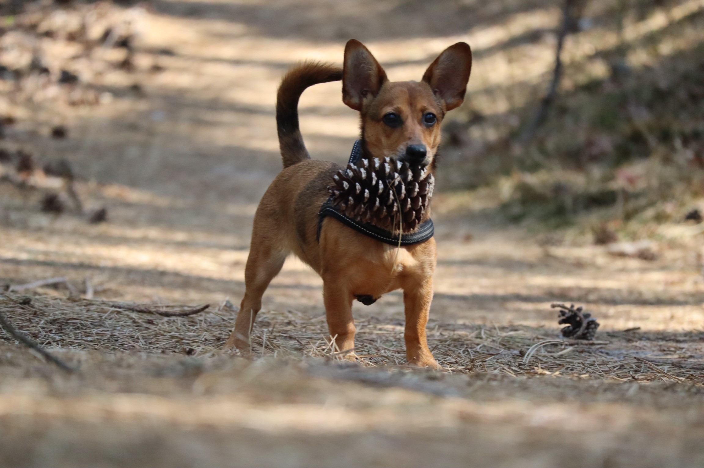
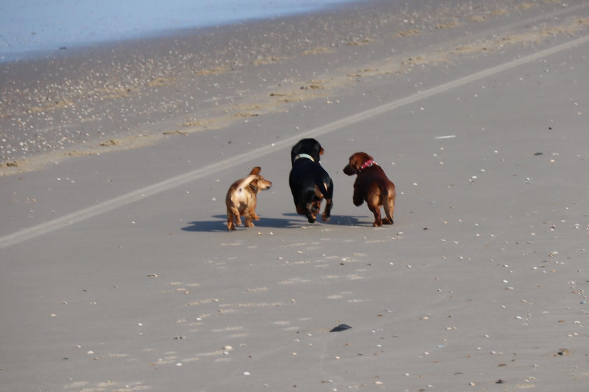

De eerste weken
 Op 12 oktober 2019 bevalt hondje Floor van een nest puppies. het zijn drie reutjes en 1 teefje. Het verhaal gaat over het teefje Yindee. Yindee haar mama is een kleine kortharige teckel in de kleuren zwart/wit. Haar vader is een lichtbruine pomeriaan. Deze mix wordt een Damaranian of Pomweenie genoemd. Yindee is bruin met donkere vlekken. Ze heeft geen lange haren, maar zeker ook niet heel kort. De eerste 8 weken van haar leven blijft Yindee bij haar mama en broers.
De adoptie
Wanneer de baasjes van Floor haar puppy's aanbieden wordt dit door ons gezien. We zijn meteen verliefd op dat kleine lieve koppie. Op 7 december mogen we bij haar kijken en als het klikt, dan mag ze mee. Zenuwachtig en met alle voorbereidingen gaan we op pad. Natuurlijk klikt het meteen. Ook de moeder van Yindee is een hele sociale lieve hond.
Na de nodige vragen te hebben gesteld en wat formaliteiten is het dan zo ver. Yindee mag mee met ons. Naar haar nieuwe huis. Wat spannend voor dit kleintje. Voor het eerst de weide wereld in zonder mama, zonder broertjes. Helemaal alleen met vreemde mensen in de auto. Ze zit voorin op schoot bij haar nieuwe moeder, met een nestknuffel in een veilig mandje. Onderweg wordt nog een plas/poep stop gemaakt. Maar dat is allemaal te spannend.
Het nieuwe thuis
Aangekomen in het nieuwe huis gaat Yindee voorzichtig op onderzoek uit. Al snel wordt duidelijk dat ze graag bij haar nieuwe mama's is. De eerste paar dagen zijn zwaar voor iedereen. Alles is onbekend en een beetje eng. Spelen vindt Yindee super leuk, maar 's nachts is het slaap tijd, en dat is erg lastig alleen.
We besluiten dat ze lekker op de slaapkamer in haar bench naast mama mag slapen, dan kan mama met haar hand in de bench liggen. Eindelijk komt iedereen aan een beetje nachtrust toe, en langzaam aan gaat het allemaal steeds beter. Plasjes en poepjes doen we nog lekker waar we willen, maar dat heeft tijd nodig, dat geeft niet.
Naar school
Als Yindee een week bij haar nieuwe mama's is gaat ze mee naar Puppysocialisatie. Dat is helemaal te gek. Ze mag daar spelen met andere hondjes. Ze is wel de kleinste, maar zeker niet de bangste. Ze vindt school zo leuk! Nieuwe dingen leren zoals 'zit' en 'af' gaan al snel goed.
Na drie weken socialisatie is het tijd voor het echte werk. De puppycursus gaat beginnen. Ook hier doet Yindee het heel goed. Ze heeft zichtbaar plezier in het leren van nieuwe commando's. Maar belangrijker nog, ze leert hier met andere hondjes omgaan. Ze ontmoet hier ook pupje Vos. Vos is een teckel en al snel raken de baasjes met elkaar bevriend en worden er wandelingen in het bos gemaakt. Met Vos en zijn grote broer Kikker vormt Yindee al een echte roedel. Kikker is de baas en is de rust zelfe.
Wandelen
Maar niet alleen met Kikker en Vos wordt gelopen. Elke dag mag Yindee wandelen en steeds een beetje verder. Het allerfijnste is om los te lopen, maar helaas mag, en kan, dat niet overal. Alleen waar het echt veilig is. Bijvoorbeeld op het strand bij Hargen of in de bossen bij Schoorl.
Yindee, Kikker en Vos op het strand in Hargen aan Zee.
Dan ontdekken mijn mama's een heel leuk park dichtbij. Ook hier mag ik lekker los rennen. En er zijn heeel veeeel hondjes om mee te spelen. Eerst vindt mama dit een beetje spannend. De meeste honden zijn veel groter dan Yindee is! Maar als ze ziet hoe goed het gaat wordt mama ook steeds rustiger. En Yindee dan ook!
De creche
Omdat Mama weer een beetje gaat werken, en Yindee niet de hele dag alleen thuis hoef te zijn hebben Mama's voor Yindee een hondencreche gevonden. Hier wordt Yindee 's ochtends heen gebracht en kan ze de hele dag spelen met andere honden. Ook krijgt ze eten en gaat ze na het eten rusten. Het is even wennen maar Yindee vindt het heerlijk. Op dinsdag en donderdag gaat ze hier een halve dag heen om te beginnen. Ook hier blijkt hoe fijn ze met andere honden speelt. Ze stapt overal op af, klein of groot, teckel of pitbull, alles is goed voor haar. Wat een lief, zelfverzekerd en sociaal hondje wordt onze Yindee.
Natuurlijk luistert Yindee ook naar muziek. Aan het liedje hieronder heeft ze niets, maar ik vond het wel toepasselijk omdat ze mij niet uit het oog verliest in het bos.